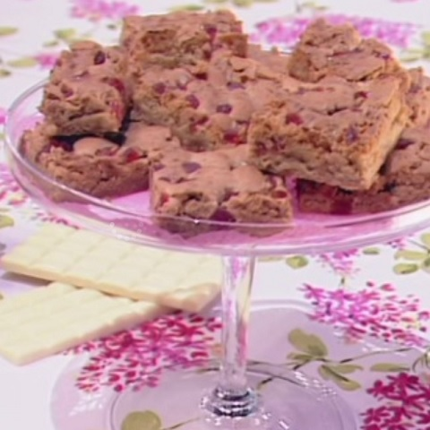

Cocktail a domicilio per i momenti di sconforto - Il Mattino.it
 MENU ACCEDI ABBONATI NOTIFICHE ABBONAMENTI LOGOUT LEGGI IL GIORNALE HOME Sezioni Primo Piano Cronaca Politica Esteri Sanità Scuola e Università Vaticano Economia MoltoEconomia Indici Azioni MoltoDonna Obbligati a Crescere Economia Welfare Mobilità Donna Cultura Libri Mostre Periferie Spettacoli Cinema Televisione Musica Teatro Sanremo Giffoni Società Persone Moda Gossip Piaceri Sport Napoli News Video Azzurri Società Curiosità Benevento Serie B Salernitana Altro Serie C Avellino Casertana Cavese Juvestabia Paganese Turris Serie D Dilettanti Calcio Serie A Calcio Internazionale Nazionali Basket Avellino Caserta Scafati Napoli NBA Formula 1 Moto GP Olimpiadi Altri Sport Statistiche Tecnologia HiTech Apple Samsung Smartphone Tablet App-Giochi Tv-Foto Scienza Internet MoltoFuturo Motori Viaggi Grandi viaggi Italia Mondo Hotel & Ristoranti Speciale Weekend Italiano News salute Focus MoltoSalute Medicina Bambini e adolescenza Benessere e fitness Prevenzione Alimentazione Storie Mattino 4.0 Agroalimentare aerospazio biotecnologie ict turismo edilizia energia trasporti altri settori news Napoli Smart Europa Ultimissime EDIZIONI LOCALI napoli Cronaca Politica Cultura Style Ricordi dinfanzia avellino benevento Salerno Caserta Calabria Multimedia Video Primo Piano Glocal Sport Video Azzurri Società Spettacoli Tech Innovazione Express Moda Viaggi Motori Salute In Vista Adnkronos Foto Persone Italia Mondo Spettacoli Sport Calcio Napoli Tecnologia Innovazione Americas Cup Napolismart Marassi Servizi Meteo Oroscopo Necrologie Network Il Messaggero Il Mattino Corriere Adriatico Leggo Quotidiano di Puglia Roma Giorno & Notte Caltagirone Editore Piemme Guida allo Shopping NAPOLI AVELLINO BENEVENTO SALERNO CASERTA CALABRIA HOME Napoli Smart Primo Piano Economia Cultura Spettacoli Sport Tecnologia ALTRE SEZIONI Primo piano Economia Cultura Spettacoli Sport Tecnologia Motori Viaggi Salute Europa Napoli Avellino Benevento Salerno Caserta Calabria Sapori della campania Napoli smart Oroscopo Meteo Tuttomercato Sondaggi Lettere Pc Dillo al mattino Guida allo shopping Video FotoCocktail a domicilio per i momenti di sconforto
Napoli Smart Tendenze Martedì 10 Aprile 2018 di Francesca Cicatelli Se beone non va al drink, il drink va a beone. Nasce il cocktail a domicilio per i momenti di sconforto ma anche no, che risponde con una soluzione al dilemma se uscire o restare a casa. Una versione prêt-à-porter delle bevande alcoliche e analcoliche. L’Archivio Storico, premium bar e ristorante napoletano, introduce un nuovo “concept” di degustazione proponendo drink pronti a bussare al campanello grazie a Moovenda. Ecco che l’assaggio non si fa più solo al bancone ma diventa un esperienza da vivere anche nelle cucine e nei salotti di casa, in compagnia di amici o in ufficio per festeggiare il privilegio di lavorare o anche nelle sale d attesa per superare la fila con un alibi. L attenzione alla qualità del cibo e delle bevande che si consumano tra le mura domestiche è diventata più alta.
APPROFONDIMENTI BENESSERE
Cocktail a domicilio per i momenti di sconforto
Così anche i drinks artigianali sono prediletti a quelli industriali imbottigliati del supermercato. Oltre ai grandi classici, nella “carta da asporto” sono presenti drink ottenuti con ricette provenienti da vecchi ricettari di fine ‘800, sia miscelati che invecchiati in botte di rovere nelle cantine del locale e poi imbottigliati. Per ciascun batch che viene imbottigliato vengono adoperate la stessa attenzione e cura che sono investite durante la fase di miscelazione al bancone. Ovviamente per i cocktail d’asporto sono banditi ingredienti potenzialmente deperibili come succhi, sciroppi o uova. Via libera invece a vini liquorosi, vermouth e distillati. Ed è tutto perciò un fioccare di old fashioned (zucchero, bitters, whiskey), old fashioned invecchiato (miele, bitters, whiskey con infusione di spezie, vino sherry, lasciato riposare 40 giorni in botte), boulevardier (whiskey, vermouth dolce, bitter), boulevardier invecchiato (whiskey, vermouth dolce, bitter lasciato riposare 40 gg in botte), negroni (gin, vermouth dolce, bitter, bitters aromatici), manhattan (rye whiskey, vermouth dolce, bitters aromatici) magari da abbinare ai famosi dolci borbonici del locale.
Videoricetta Old Fashioned
Zolletta di zucchero
2 dash di angostura
Acqua
50 ml Bourbon Whiskey
Ice chunk
Zest di limone
Potrebbe interessarti anche GLOCAL
Napoli, Fabrizia Ramondino
L'INTERVISTANapoli vista dall alto: l anteprima con Sergio D Angelo
LE INTERVISTE DEL MATTINO Napoli vista dall alto, Sergio D Angelo
si racconta a 124 metri d altezza | Video
L intervista a Manfredi: Nelle aree industriali nuove case ai giovani Maresca: La sinistra ha fallito, cambierò il piano regolatore GLOCAL Napoli, Clemente su dimissioni
GLOCALNapoli, flash mob per la galleria Vittoria
Pagina successivaNAPOLI SMART
Cinema intorno al Vesuvio , 44 serate e focus a Villa Bruno
di Emanuela SorrentinoNapoli Città Libro, quattro giorni con 120 eventi in presenza a Palazzo Reale
Campania Festival, a Capodimonte
è di scena Cabaret Colette
Giardini la Mortella, al via il Festival di orchestre giovanili nel segno di Frida Kahlo
di Ciro Cenatiempo Musiche per cembalo e arciliuto:
ecco il prologo di Sicut Sagittae
di Enrica Buongiorno Napoli vista dall alto: l anteprima con Sergio D Angelo
La grande menzogna di Harry sui soldi, Carlo lo sbugiarda: la somma stellare ricevuta dal padre
VIDEO PIu VISTO
La grande menzogna di Harry sui soldi, Carlo lo sbugiarda: la somma stellare ricevuta dal padre
LE PIÚ CONDIVISE
Nicola Tanturli ritrovato a 3 km da casa. Si è allontanato da solo , ma si indaga sui punti oscuri
1628Chiara Ferragni, la richiesta fuori luogo di Leone alla mamma. Fedez lo riprende: Ma che dici?
di E.C.Variante Delta in Campania, focolaio a Torre del Greco: contagi in palestra, molti positivi under 30. Allarme immigrati Bangladesh
di Ettore Mautone 1750GUIDA ALLO SHOPPING
Moka: la migliore per gustarsi un caffè come quello del bar
Nuova Villa,
3.900.000 €
Vendita Nuova Villa a Sperlonga
VEDI TUTTI GLI ALTRI Vedi tutti gli annunci su ilmessaggerocasa.it © 2021 Il Mattino - C.F. 01136950639 - P. IVA 05317851003 CALTAGIRONE EDITORE | IL MESSAGGERO | CORRIERE ADRIATICO | IL GAZZETTINO | QUOTIDIANO DI PUGLIA | LEGGO | PUBBLICITÁ CONTATTI | Privacy Policy | Cookie Policy | Informazioni legaliPreferenze cookie